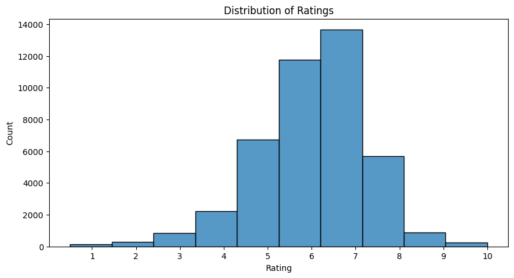
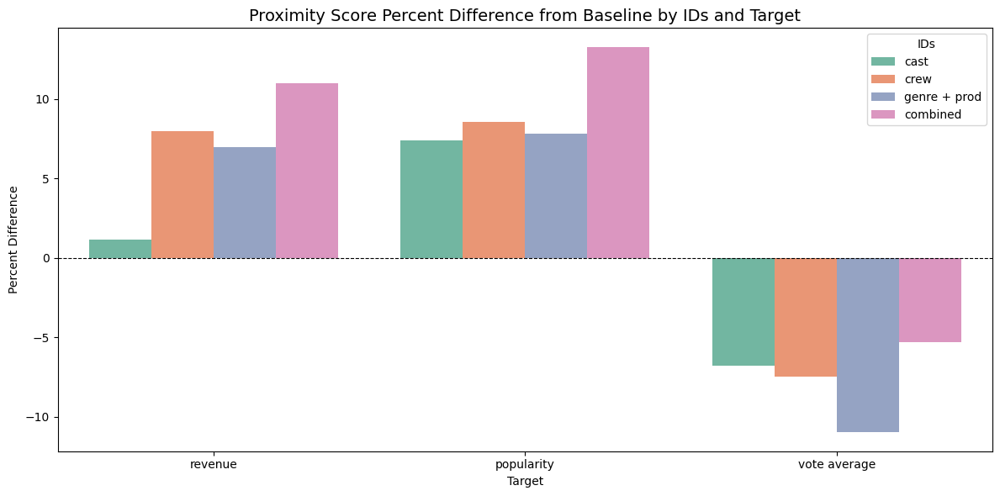
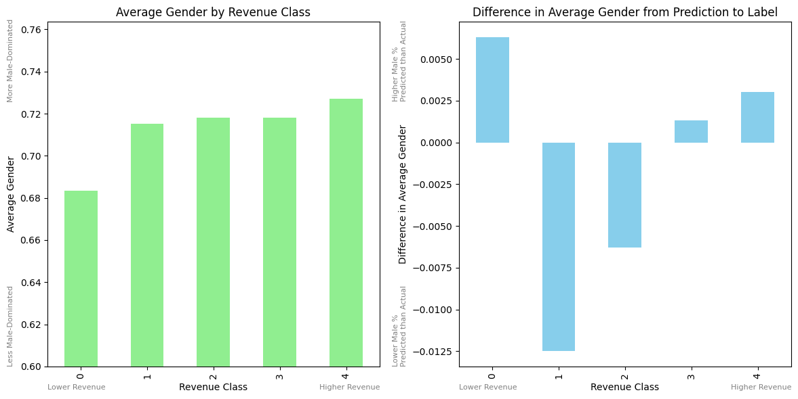

Abstract
This paper presents a novel approach to predicting movie success, using only the list of people who worked on the film. While other approaches like that of Sharda and Delen (2006) have used metrics like production cost and MPAA ratings, we focus on the cast, crew, and production companies involved. This method is based on the idea that consumers are attracted to movie stars and directors when deciding which films to watch so it should be possible to use the people involved in a film to predict its success. We use a dataset of 45,466 movies from 1874 to 2017 from IMDB, which includes information about the cast, crew, and production companies as well as the average rating and number of votes for each film, its revenue, and its popularity. A deep learning approach is used to predict the rating, revenue, and popularity of a movie based on embeddings that represent the people involved in it and compare the success of using different subsets of the embeddings for each target variable. We find that the best results are obtained when using all of the embeddings together and we find the best success in predicting revenue and popularity while predicting the rating proved to be more difficult. The results suggest that the people involved in a film can be used to predict its success to a certain extent, but that other factors also play a significant role, explaining the better success seen by those like Quader et al. (2017).
Introduction
What makes a good movie? What makes a successful movie? Are these questions synonymous or different entirely? The film industry is a multi-billion dollar business, and as such, predicting movie success is of great interest to studios and investors. Traditionally, it took industry expertise to have a sense of which movies would be successful, but with the advent of big data and machine learning, it is now possible to use data-driven approaches to make predictions. The industry is a complex ecosystem, and the success of a movie can be influenced by a multitude of factors. Some of these factors are easily quantifiable, such as production cost, MPAA ratings, and marketing strategies. Others are more subjective and harder to measure, such as the quality of the script or the chemistry between the cast members. Previous work has focused on the more quantifiable factors, however, these approaches often leave out what is potentially the most important factor: the people involved in the film. One would expect the cast, crew, and production companies all play a significant role in determining a movie’s success, and this paper aims to explore how we can use this information to make predictions.
Given the value in the film industry, it is not surprising that there has been a great deal of research into predicting movie success. Sharda and Delen (2006) used a variety of metrics to predict the success of movies, including production cost, MPAA ratings, and competition. They found that these factors could be used to make accurate predictions about a movie’s financial success. Ravid (1999) looked at the impact of star value in the cast and found conflicting results on their impact. Quader et al. (2017) used SVMs and Neural Networks to predict box-office success and found that budget was among the most important factors. That said they included factors like the number of screens which is not available until after the movie is released and is thus less useful for movie producers when deciding whether or not to make a movie. Zhang, Luo, and Yang (2009) did a similar thing with a multi-layer neural network to predict box office success using information only known before the theatrical release using factors like star power and marketing and found success.
The fundamental question that these attempts are missing is the question of quality not necessarily being related with revenue. Any movie enthusiast will tell you that there are many movies that are critically acclaimed but did not do well at the box office and vice versa. As such, simply predicting box office success, while important for production companies, is not the only metric of success. Another factor that these studies are missing is the fact that they are only incorporating small measures of the people involved in the film. While some of the aforementioned authors included a star power metric, this ignores the vast majority of the cast and the rest of the crew involved. Instead of distilling the people involved in a film down to a single number, we propose using embeddings to represent the people involved in a film. This allows us to capture the relationships between the people involved and how they may influence each other. These embeddings in conjunction with a multi-layer neural network, we predict will allow us to make predictions about a movie’s success, measured by rating, revenue, and popularity, not just box office returns. If this attempt proves successful, it could be integrated into the decision-making process along with other methods that use more traditional metrics for enhanced prediction success.
I will use a dataset of 45,466 movies from IMDB, a website that aggregates information about movies and allows for users to leave reviews and ratings. IMDB offers an average rating which will be one of the targets as well as a popularity metric which factors how often a movie is searched for and how many reviews it has received. We will also use the revenue of the film as a target variable to mirror the literature. The dataset includes information about the cast, crew, and production companies involved in each film with unique IDs for each person and company which will be used to create the embeddings. We will use various methods like class weighting, positional encodings, and attention pooling to improve the performance of our model.
Values Statement
Potential users of this model include movie studios and investors looking to make decisions about which movies to produce. The goal of this project is to provide insights into the movie industry and how different characteristics influence a movie’s success, not to create a model that will be used to make decisions about which movies to produce. However, it is important to consider the ethical implications of using models like this in the decision-making process. If models like this can be proved successful, they could be used by movie studios to help make decisions. This could lead to a self-fulfilling situation where only certain types of movies are produced, which could limit the diversity of movies available to audiences. This could be problematic as it could lead to a homogenization of the movie industry and a lack of representation for certain groups. The choice to produce a movie is very important for the livelihoods of those involved in the production and the actors, and if this model is used to make those decisions, it could have a significant impact on their lives. Those trying to push the envelope of the movie industry may be discouraged from doing so if they know that their movie will not be produced because it does not fit the mold of what is expected to be successful. This could lead to a lack of innovation in the industry and a decrease in the quality of movies being produced. It is important to consider these ethical implications when using models like this to make decisions about which movies to produce. The goal of this project is better understand the movie industry, not to create a model that will be used to make decisions about which movies to produce.
Another potential user is moviegoers. If a model like this could be implemented in a personalized way, trained on a user’s preferences, it could be used to recommend movies to them. This could be a useful tool for moviegoers looking for new movies to watch, but it could also discourage them from watching movies that do not fit their typical preferences. Discouraging exploration and curiosity is not the goal of this project, and it is important to consider the implications of using models like this to make personal recommendations as well.
Overall my intent is to learn about the movie industry and how different characteristics influence a movie’s success. As a person who loves movies and machine learning, I want to combine these interests to learn about how well neural networks can be used to predict movie success. While a production version of such a model could be problematic and make the movie world less equitable, as discussed above, that is not the intention of this project. I do not wish for movie making decisions to be made by algorithms and I think that that potential future is a dire one.
Materials and Methods
Data
The data comes from Kaggle and was collected using the TMBD API and GroupLens. There are several different sheets in the dataset but the main ones used are the Movies Metadata one, the Credits one, and the Ratings one. The metadata dataset includes basic information about 45,466 movies from 1874 to 2017 including the revenue, popularity, genre, and production companies. The credits dataset has the cast as well as the entire crew and departments that each individual worked in for each movie. Finally, the ratings dataset has 26,024,289 ratings from 270,896 users. The ratings are on a scale of 0 to 10 and are used to calculate the average rating for each movie. Unique movie IDs are used to join the relevant information from the different datasets together. Overall, the dataset is quite large and comprehensive in terms of movies and reviews. A potential source of bias is the fact that the dataset is from IMDB, which is a website that is primarily used by English-speaking audiences. This could lead to a situation where movies that are not in English or do not have a large following in English-speaking countries are underrepresented in the dataset especially when it comes to ratings. While this is a concern, it is important to note that the dataset does include movies from a variety of countries and languages. Additionally, the dataset is quite large and includes a wide range of movies from different genres and time periods, which should help to mitigate this bias.
Approach
The approach taken in this project is to use a deep learning model to predict the rating, revenue, and popularity of a movie based on the people involved in it as well as the production companies and genres. The target variables were rating, revenue, and popularity. The rating is the average rating of the movie on a scale of 0 to 10, the revenue is the total revenue of the movie in dollars, and the popularity is a score that is calculated based on the number of page visits and interactions for a given movie. The features used are the list of unique IDs that correspond to each member of the cast and crew as well as the production companies and genres. The unique IDs are used to create embeddings that represent the people involved in the film. The embeddings are then used as input to a multi-layer neural network to predict the target variables. The model is trained using a binary cross-entropy loss function with class weighting (to account for the unequal class distribution when predicting vote average), and the Adam optimizer is used for optimization. The model is evaluated using accuracy and a normalized mean absolute error as a proximity score given the multi-class context.
Data Preprocessing
The collection of movies for each target variable is slightly different. For rating, we only include movies that have at least 100 ratings to filter out potential outliers. For revenue, we only include movies that have a revenue greater than 0 to filter out movies that did not make any money or have no revenue information. This leaves us with 7,428 movies for revenue, 45,535 for popularity, and 6031 for rating. The movies are then split into a training set (60%), a validation set (20%), and a test set (20%). The training set is used to train the model, the validation set is used to tune the hyperparameters, and the test set is used to evaluate the performance of the model. For the ratings we round down the ratings to the nearest integer to make it a multi-class classification problem. This leads to some class imbalance as ratings are approximately normally distributed with 6 being the most common rounded rating. To account for this we use class weighting to give more weight to the less common classes in the loss function. For revenue and popularity we simply use five equal sized quantiles to create the classes. This leads to a more balanced dataset for these two target variables so class weighting is not necessary.

Embeddings
The embeddings are created using the unique IDs for each person and company involved in the film. There are three main embeddings used, the cast embedding, the crew embedding, and the production company and genre embedding. The cast embedding uses the IDs and is padded with zeros to ensure that all movies have the same length. The crew embedding is created in a similar way, but it also takes into account the department that each person worked in (directing, writing, etc.). This means that in one embedding, the different departments begin in fixed places in the embedding. These positions are determined according to the movie with the most crew members in that department and the rest of the movies are padded with zeros to ensure that the same departments are in the same place. This is important because it allows the model to understand the importance of each department in a movie by differentiating between the departments. It is important that order is preserved since those listed first in the credits usually played a bigger role. The production company and genre embedding is created in a similar way, but it uses the unique IDs for the production companies and genres instead of the people involved in the film. The embeddings are then concatenated together to create a single input vector for the model. Each embedding is also tested on its own to see which one is the most important for predicting each target variable.
Model
The model itself is a multi-layer neural network with several layers. The input layer takes in the concatenated embeddings with an embedding dimension of 25 along with a positional encoding layer to maintain a sense of the order of the people in the embeddings. The positional encodings simply capture where in the input each embedding is and this position is added to the embedding. The model then passes that through an attention pooling layer which uses softmax to weight the different embeddings based on their importance. This is important because not every unique ID is likely to be equally important. For example, the director or the lead actor is likely far more important than the fifth lighting designer. The attention pooling allows the model to learn these importances and incorporate them into the predictions. With a sense of the order of the embeddings and the importance of each embedding the model then passes the output through three layers of decreasing size followed by layer normalization, ReLU activation, and a 30% dropout to avoid overfitting.
Gender Bias Audit
The data comes with the genders of each person involved in the film. This is important to consider as it could lead to a situation where the model is biased towards a certain gender. To audit this, after the model is tested on the test set we extract the genders of each person involved in the film and calculate the average gender for each movie (women are mapped to 0 and men are mapped to 1). We then calculate the difference between the average gender of the predictions for each category and the true labels. This allows us to see if the model is biased towards a certain gender, giving, for example, a higher rating to movies with more men. We perform this audit for the revenue target variable as it is the most important one for the movie industry and the one that our model performed the best on.
Results
The results of the model are shown in the table below. The IDs column indicates which of the embeddings were used where combined means that all of the embeddings were used together. The baseline measures indicate the results for a theoretical model that simply predicts the mean of the target variable for each class. The bolded test metrics indicate that the model performed better than the baseline with the italicized metrics indicating the embeddings that performed the best for each target variable. The accuracy is the standard accuracy metric, while the proximity score is a normalized mean absolute error that takes into account the multi-class nature of the problem giving a sense for how close the predictions were to the actual values (predicting 3 for a class of 4 is better than predicting 1 for a class of 4).
| IDs | Target | Movies | Base Acc | Test Acc | Base Prox | Test Prox |
|---|---|---|---|---|---|---|
| cast | revenue | 7428 | 0.200 | 0.297 | 0.702 | 0.710 |
| crew | revenue | 7428 | 0.200 | 0.355 | 0.702 | 0.758 |
| genre + prod | revenue | 7428 | 0.200 | 0.351 | 0.702 | 0.751 |
| combined | revenue | 7428 | 0.200 | 0.396 | 0.702 | 0.779 |
| cast | popularity | 45535 | 0.200 | 0.339 | 0.702 | 0.754 |
| crew | popularity | 45535 | 0.200 | 0.348 | 0.702 | 0.762 |
| genre + prod | popularity | 45535 | 0.200 | 0.335 | 0.702 | 0.757 |
| combined | popularity | 45535 | 0.200 | 0.339 | 0.702 | 0.795 |
| cast | vote average | 6031 | 0.420 | 0.359 | 0.866 | 0.807 |
| crew | vote average | 6031 | 0.420 | 0.318 | 0.866 | 0.801 |
| genre + prod | vote average | 6031 | 0.420 | 0.260 | 0.866 | 0.771 |
| combined | vote average | 6031 | 0.420 | 0.376 | 0.866 | 0.820 |
Overall, the model was able to outperform the baseline when predicting revenue and popularity, but not when predicting the vote average. Several attempts were made to improve the model including changing the structure of the layers, using self attention, and using different optimizers however these were the best results we were able to achieve. That said, while disappointing that the model was unable to predict the vote average, it is still promising to see that the model was able to outperform the baseline for revenue and popularity. This suggests that the people involved in a film can be used to predict its success to a certain extent, but that other factors also play a significant role as past researchers have achieved much higher accuracies. The model was able to learn the relationships between the people involved in a film and how they may influence each other, which is an important step in understanding the movie industry. The attention pooling layer was particularly useful in this regard as it allowed the model to learn the importance of each embedding and incorporate that into the predictions. While not included in the table, the results before adding attention pooling and positional encodings were significantly worse.
Below is a chart of the percent difference between the proximity score and the baseline for each target and embedding combination. We observe that in all cases, combining all of the embeddings together leads to the best results. This is not surprising as it gives the model more information to work with. Other relationships are less clear so it is hard to determine which of the three embeddings on their own is the most important. Perhaps surprisingly, the cast embedding performed the worst for revenue and popularity but this is unlikely to be significant.

Finally, the results of the gender bias audit are shown in the figure below. The plot on the left shows the average gender of the people for the movies in each class where 4 corresponds to the highest revenue and 0 corresponds to the lowest revenue. Here we see that on average, the average gender increases with the revenue class, meaning that more successful movies tend to have more men (as a percentage of the cast and crew) than less successful ones. This already shows that the industry itself is biased towards men with over 71% of people working on movies being men on average. Our model is likely to learn from this bias and replicate it in its predictions.
The plot on the right shows the difference between the average gender of the predictions and the true labels for each class. Here we see that the model seems to be even more biased towards men than the data itself with average gender increasing even more with the revenue class in the predictions than in the data. This suggests that the model exacerbates the bias in the data however it is important to note that the differences observed are very small and may not be significant. That said, this is an important consideration when using models like this to make decisions about which movies to produce. It is important to ensure that the model is not biased towards a certain group and that it is not replicating or intensify existing biases in the data. In the future, it would be interesting to test the bias of the model on the other target variables as well to see if similar biases are observed with other factors like race or age (unfortunately this information wasn’t included in the dataset).

Concluding Discussion
The main takeaway from these results is that the people involved in a film can be helpful in predicting its success. That said, solely looking at this information is not enough to make accurate predictions and other factors like script quality, marketing, and competition also likely play a significant role. It would be interesting to see how a model like those used in the literature could be combined with this model to improve the predictions. The results of our contemporaries suggest that the people involved in a film are not the only factor that determines its success, but we have now proven that they are not an insignificant factor either. Future work that combines the two approaches could lead to even better predictions and a better understanding of the movie industry.
The project worked in the sense that we were able to use the people involved in a film to predict its success by employing embeddings and a multi-layer neural network. Since the main goal was to see if this approach was even possible, we are happy with the results. With more time and resources, further fine tuning and optimization of the model could likely lead to even better results but we are satisfied with my proof of this concept’s viability. After the initial testing workflow was developed, a lot of the time and effort was spent tweaking and testing the model to see if we could get better results. The use of class weighting, positional encodings, and attention pooling were all successful in improving the model’s performance and more techniques were attempted. There are undoubtedly more things that could be tried to improve the model but we are happy with our results given the extent of the experiments we conducted.
Group Contributions Statement
As I was the only person working on this project, I was responsible for all aspects of the project and I wrote all of the code and the report. I started by cleaning the data and testing some of the quantitative features on simple out-of-the-box models to get a sense for the predictive power of the data in the movies context. After reading some of the literature, I decided to pivot to using embeddings and focusing on the people involved in the film as this was, as far as I could tell, a novel approach. I then spent a lot of time trying to figure out how to create the embeddings and how to structure the model. After that, I spent a lot of time testing different structures and hyperparameters to see what worked best. I also spent time writing the report and creating the figures. Overall, I am happy with the results and I think that this project was a success.
Personal Reflection
Over the course of this project I learned a lot about neural networks and machine learning in general which was my main goal. I wanted to get hands on experience tinkering with neural networks in order to gain a better understanding of how they work and how to use them. Before I had simply been using them as a black box and I wanted to learn more about how they actually work so I can more effectively use them in the future. I also learned a lot about how to work with embeddings. Previously I thought of embeddings only in the context of NLP and text data which is why I was excited to try using them in a different context. I learned a lot about how to create and use embeddings and what techniques can be used to improve their performance like positional encodings and attention pooling. I also learned a lot about the movie industry and how different characteristics influence a movie’s success. I have always been interested in movies and this project allowed me to combine my interests in movies and machine learning which was a great experience. Overall, I am happy with the results and I think that this project was a success.
I did not necessarily set out on this project with a specific goal in mind, but after exploring the data, the literature, and different models I was able to find a direction that I was interested in. Once I knew that I wanted to use embeddings that represent the people involved in a movie, my goal became one of proving a concept. I wanted to see if this approach was even possible and if it could lead to better predictions than the baseline. I wasn’t trying to beat the best models in the literature, but rather to see if this novel approach could be successful in order to understand if it could be combined with other approaches in the future. In that sense, I think this project was a success for the most part. I would have liked to see better results for the vote average but I think that this is a promising start and that it could be improved to the point where predicting vote average is also possible.
I will carry my improved understanding of neural networks and embeddings into the future and I think that this project has given me a solid foundation to build on. While I don’t know if I will have the opportunity to work with neural networks again, at the very least I now have a better understanding of how they work which will help as I read about the advancements in the field of machine learning. It is such a fast moving field and I think that this baseline and the hands-on experience I have gained will help me to keep up with the advancements in the field.